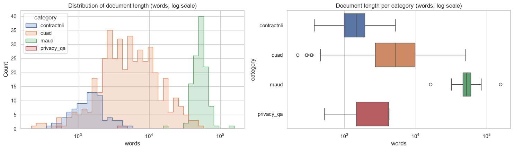
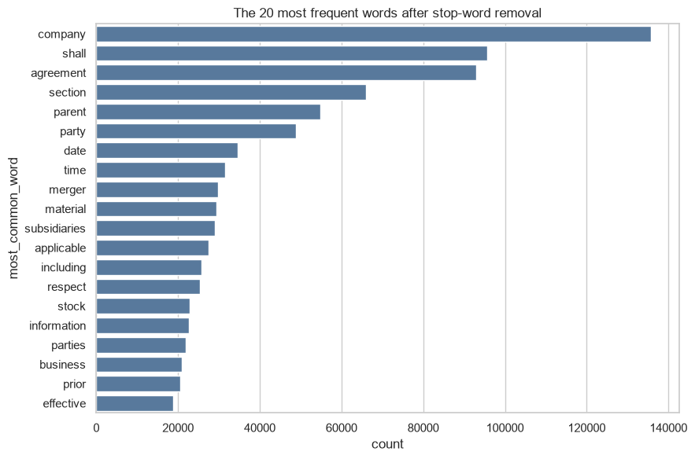
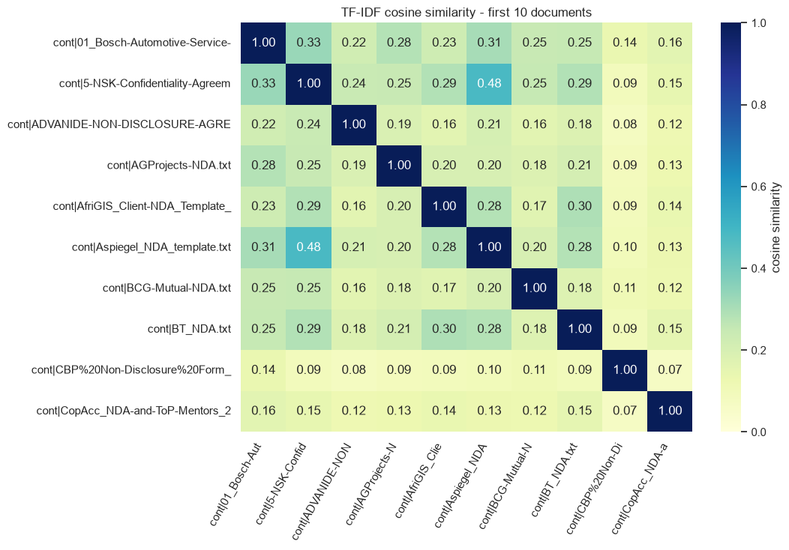
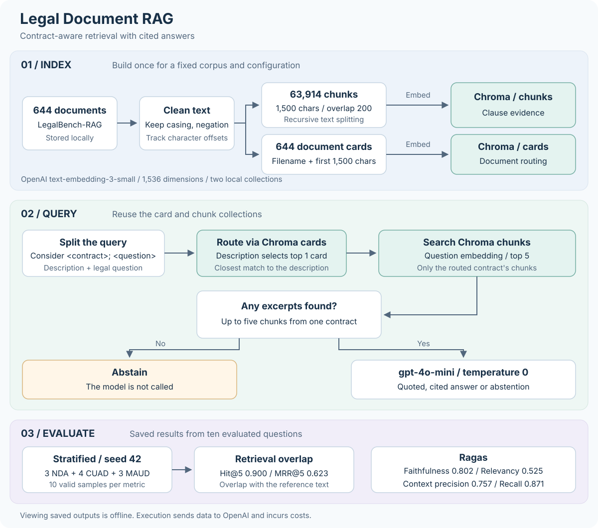

Questions where a top-five chunk overlapped the reference text.
Context recall. The retrieved excerpts covered most of each reference answer.
MRR@5. The first overlapping chunk was ranked first for only 5 of the 9 hits.
Answer relevancy, the weakest score. Good evidence did not always become a direct answer.
Questions where the model abstained, including at least one with a retrieval hit.
Faithfulness. Most claims in the answers were supported by the quoted excerpts.
01The problem
Every benchmark question names a contract and then asks a generic legal question. A plain search across all contracts would return similar clauses from the wrong documents.
Yes. The relevant clause states:
"Mentor shall not have any right, license, title or interest in or to any Confidential Information, except the limited right to review, assess and help develop such Confidential Information in connection with the Copernicus Accelerator 2017" [Source 2]
[Source 2] contractnli/CopAcc_NDA-and-ToP-Mentors_2.0_2017.txt, characters 10540-11970
[Source 3] to [Source 5] come from the same contract.
- The purple part identifies the document. It is matched to a document card to choose one contract.
- The blue part is the legal question. It is searched only within the chosen contract's chunks.
- All five sources come from the right contract, and each one maps back to exact characters in the source file.
02The data
The corpus comes from LegalBench-RAG, which combines four legal datasets. Each benchmark answer is a span of text, given as a file path and a character range.
| Group | Content | Documents | Mean words |
|---|---|---|---|
| ContractNLI | Non-disclosure agreements | 93 | 1,612 |
| CUAD | Commercial contracts | 431 | 7,853 |
| MAUD | Merger agreements | 117 | 53,646 |
| PrivacyQA | Privacy policies | 3 | 2,953 |
| Total | 644 | 15,248 |
Few merger agreements, most of the text
- MAUD merger agreements are 18% of documents but about 64% of all words. Word shares are calculated from document counts and mean lengths.
- The 6,695 benchmark questions include 6,033 whose source document is in the corpus. Only these are used for evaluation.
Document lengths

- Lengths range from 219 to 156,104 words. The median document has 5,494 words and the mean has 15,248.
- NDAs cluster around 1,000 to 2,000 words, and merger agreements around 50,000. Commercial contracts span the widest range.
- Documents this long must be split into chunks before they can be searched and passed to a model.
Most frequent words


- "Company", "shall" and "agreement" lead the list. These are common legal terms.
- "Parent", "merger", "subsidiaries" and "stock" also rank high. This reflects the large share of text in merger agreements.
How alike the contracts are


- The first ten documents, all NDAs, have a mean similarity of 0.19. Ten random documents have 0.23.
- Contracts share vocabulary but differ in wording. This is why the contract must be found before its clauses are searched.
03The pipeline
The documents are indexed once. Each question is then routed to one contract before its clauses are searched.

text-embedding-3-small and store them in two local Chroma collections.gpt-4o-mini at temperature 0 answers with exact quotes and source citations, or abstains when no clause supports an answer.04Results
Ten questions were evaluated: three NDA, four CUAD and three MAUD questions, chosen with seed 42. Every metric has a score for all ten.
Retrieval
Answering
Context recall and precision are Ragas metrics, but they measure the retrieved excerpts, so they are grouped with retrieval here.
- Retrieval is the stronger step. Hit@5 is 0.900 and context recall is 0.871.
- Answering is the weaker step. Answer relevancy is 0.525, well below the retrieval scores.
- Ranking leaves room to improve. An MRR@5 of 0.623 means the first overlapping chunk is often not the top result.
05Question by question
Averages hide where the pipeline fails. Each row below is one evaluated question, with its six scores from the notebook.
| Question | Hit@5 | MRR@5 | Faithful | Relevancy | Precision | Recall |
|---|---|---|---|---|---|---|
| NDA 344 | 0 | 0.000 | 1.000 | 0.000 | 0.250 | 0.000 |
| NDA 381 | 1 | 1.000 | 1.000 | 0.597 | 1.000 | 1.000 |
| NDA 351 | 1 | 0.200 | 1.000 | 0.710 | 1.000 | 1.000 |
| CUAD 2307 | 1 | 0.333 | 1.000 | 0.745 | 0.583 | 1.000 |
| CUAD 1100 | 1 | 0.200 | 0.667 | 0.577 | 0.200 | 1.000 |
| CUAD 3537 | 1 | 1.000 | 0.000 | 0.000 | 1.000 | 1.000 |
| CUAD 457 | 1 | 1.000 | 1.000 | 0.936 | 1.000 | 1.000 |
| MAUD 862 | 1 | 1.000 | 1.000 | 0.430 | 1.000 | 1.000 |
| MAUD 1202 | 1 | 1.000 | 0.500 | 0.629 | 0.533 | 0.714 |
| MAUD 773 | 1 | 0.500 | 0.857 | 0.625 | 1.000 | 1.000 |
- NDA 344 is the only retrieval miss. Its recall and relevancy are 0, yet its faithfulness is 1.000. Faithfulness only checks claims against the excerpts, so a cautious answer can score well after a miss.
- CUAD 3537 is an answering failure. The reference clause was ranked first and recall is 1.000, but faithfulness and relevancy are both 0.
- Four hits had their first overlapping chunk below first place. For NDA 351 and CUAD 1100, it came fifth.
- Answer relevancy is the most uneven score. It ranges from 0 to 0.936, and only CUAD 457 scores above 0.75.
06Next steps and limitations
What to try next
- Re-rank the retrieved chunks so that the most relevant clause comes first, which targets the 0.623 MRR.
- Adjust the prompt so that partly matching clauses lead to an answer rather than an abstention.
- Review routing errors and test richer document cards.
- Compare clause-aware chunking with fixed 1,500-character windows.
Limitations
- Ten questions is a small sample. One question changes Hit@5 by 0.1.
- Routing picks one contract. If it picks the wrong one, every excerpt comes from that contract.
- Ragas scores are judged by an LLM and can vary between runs.
- The answers are model-generated and are not legal advice.